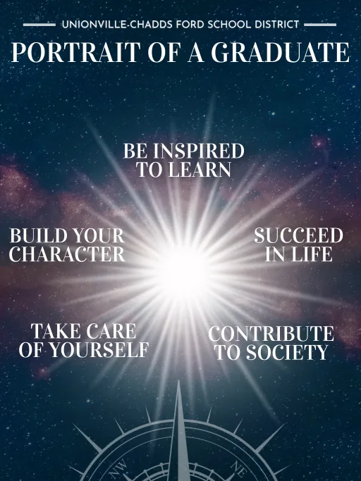

A PROJECT FOR STUDENTS AND STAFF
The UVoyage Animation Series is a district-approved creation project where UHS students collaborate in teams to script, design, develop, animate, and advertise a 5 part animation series over a 5 year period and implement it throughout the UCFSD Elementary schools to promote the UCFSD Portrait of a Graduate school themes of Be Inspired to Learn, Succeed in Life, Contribute to Society, Take Care of Yourself, and Build Your Character. This animation series will be developed and critiqued by an elementary student and staff team, with the end product being distributed throughout elementary school curricula.
